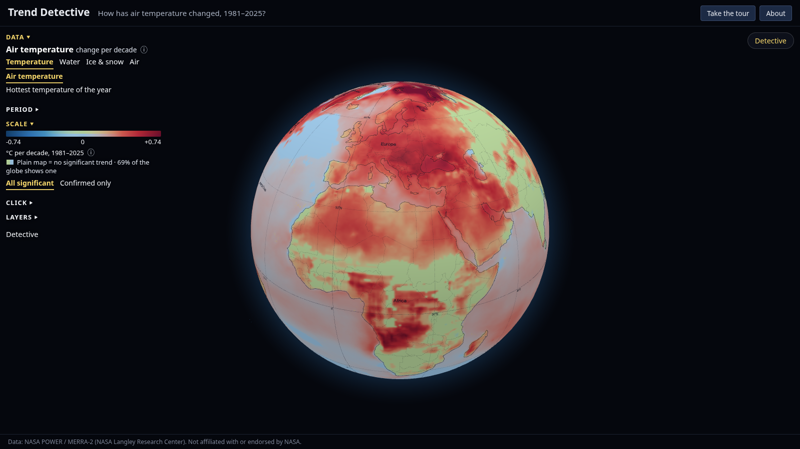
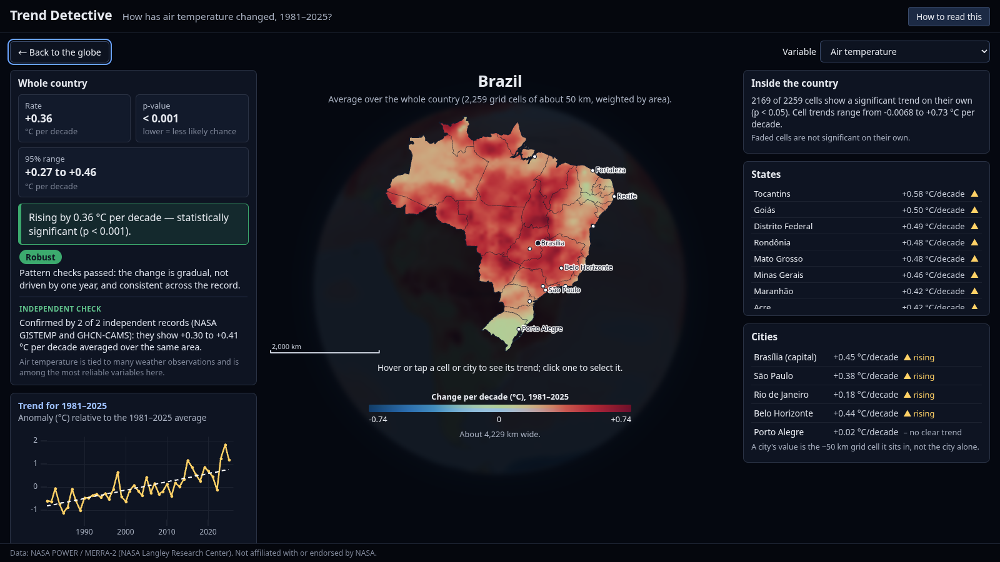
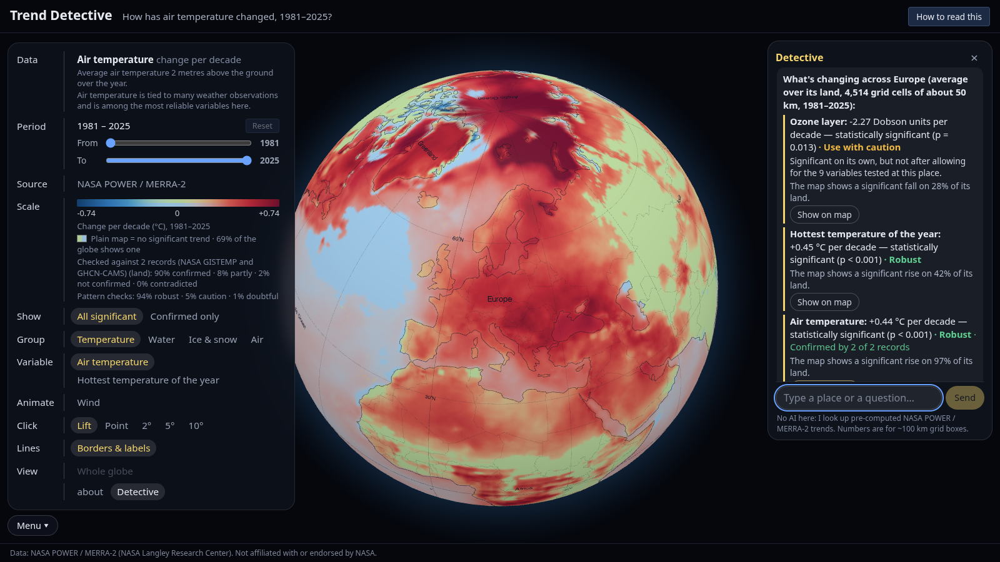
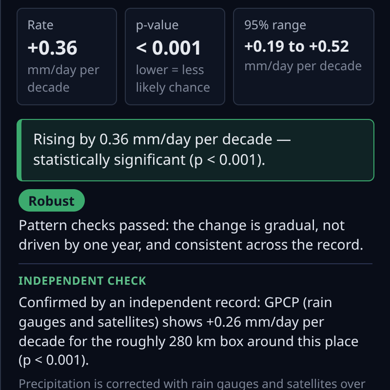
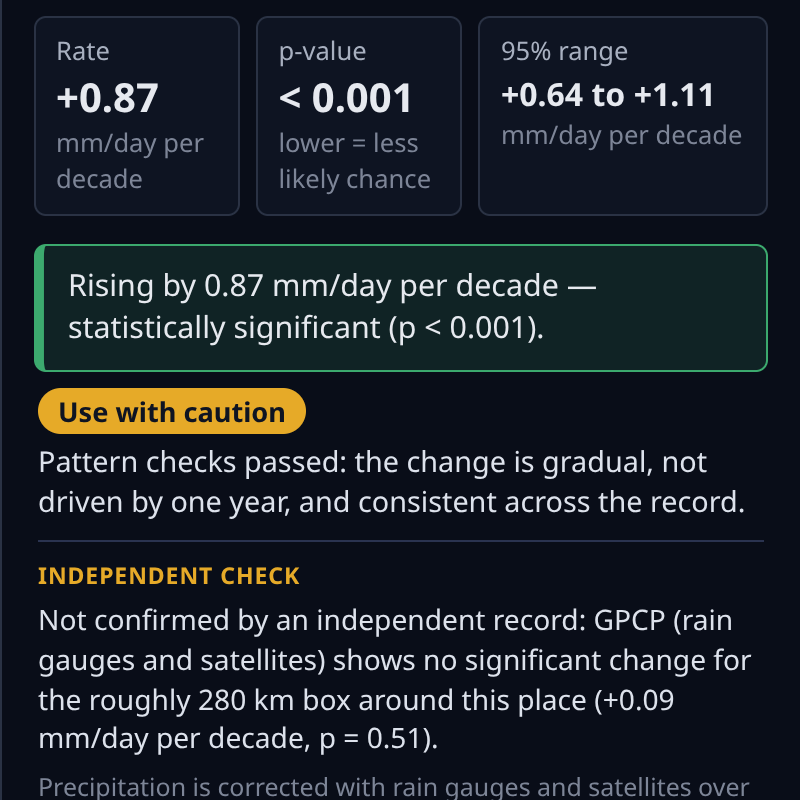

NASA Space Apps Challenge 2026
Is the Earth system changing where you live, how fast, and can the answer be trusted?
Challenge: Be an Earth System Trend Detective
Team: HawkTeam
Member: Osman Sahin Guler
Try it: hawkosm.github.io/NASA-Earth-System-Trend-Detective
The problem
A coloured map answers one question. A detective needs three.
A Mann–Kendall test for each of 207,936 grid cells, corrected for year-to-year memory, with false-discovery control so the map stays plain where nothing is proven.
A Theil–Sen rate per decade with a 95% range, in the variable's own units. One odd year cannot dominate it.
Every trend gets a grade, and temperature and rainfall are checked against independent measurements. Most trend maps stop before this.
What it shows
Where

Which variables

Can the answer be trusted?

Shanghai, rainfall: confirmed by an independent record

Cebu, rainfall: significant in MERRA-2, not confirmed
Where MERRA-2 shows a significant trend, an independent record confirms it on
97% of land, for temperature
NASA GISTEMP: thermometers and ships
26% for rainfall
GPCP: rain gauges and satellites
Every trend also gets a grade from four pattern checks: a jump, one year that decides the answer, a reversal, and dependence on the first or last years.
Reproduce it in one click
| Place | What changed, per decade | Independent record |
|---|---|---|
| Istanbul | Air temperature +0.54 °C | NASA GISTEMP +0.55 |
| Shanghai | Rainfall +0.36 mm/day | GPCP +0.26 |
| The Amazon at Porto Velho | Rainfall −0.67 mm/day | GPCP −0.36 |
NASA data: NASA POWER (Langley Research Center), built on MERRA-2 (GMAO); NASA GISTEMP (GISS). Other: GPCP rainfall (NOAA PSL); Natural Earth for borders and places; wind-streak idea from cambecc/earth. AI: built with AI coding tools (Claude Code), disclosed in the README; no AI runs on the site; every picture here is a screenshot of it.
Try it: hawkosm.github.io/NASA-Earth-System-Trend-Detective